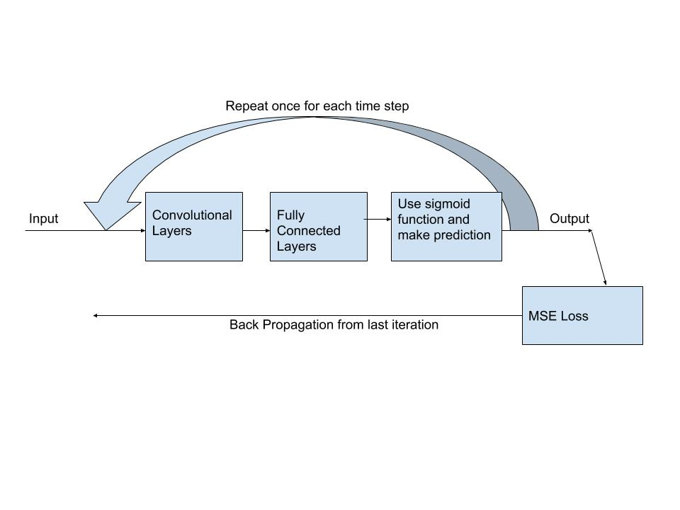
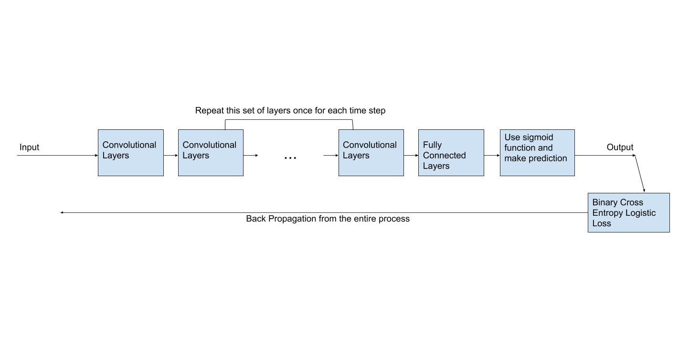
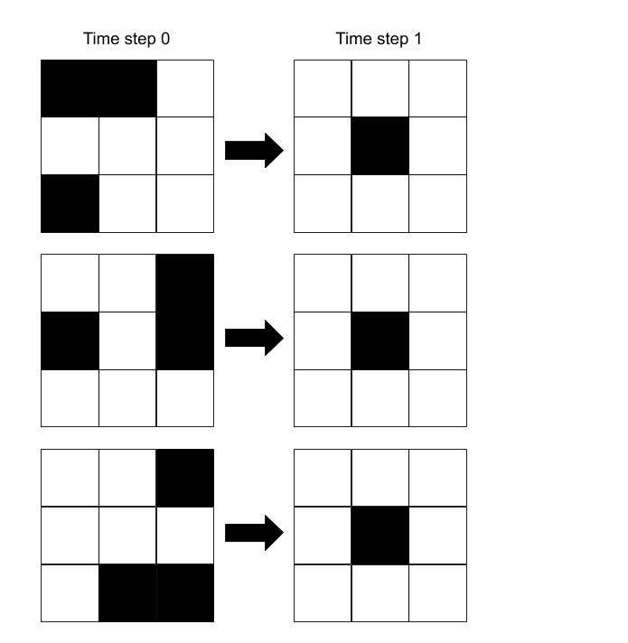
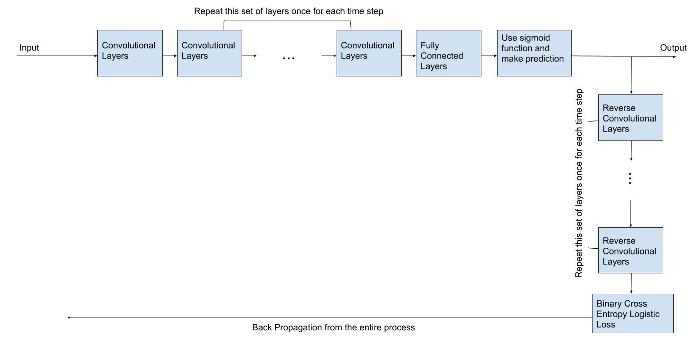
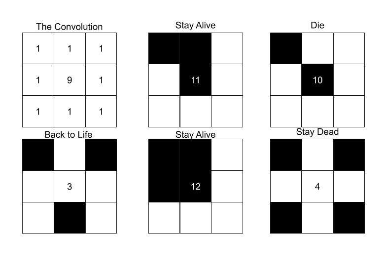

Conway's Game of Life
Conway's game of life is a essentially a grid of cells that live (or die) by a simple set of rules. They are:
- If a living cell is surrounded by 2 or 3 cells, it survives to the next time step.
- If a living cell is surrounded by more than 3 cells, it dies of over population.
- If a living cell is surrounded by less than 2 cells, it dies of under population.
- If a dead cell is surrounded by 3 cells, it is reborn.
Let's look at a few examples. The living cells are black, the dead cells are white.
Because each living cell touches exactly 2 other living cells, this won't change over time:

Because each living cell touches exactly 3 other living cells, this won't change over time either:

In this example, the middle cell always touches two living cells, so it remains; the outer cells alter between touching 1 cell (and dying), and touching 3 cells (and being brought to life). This is called a blinker:

In a similar fashion, some patterns look as if they move:

The patterns can get quite interesting and complex. This is a famous one called Gopher's Glider Gun:

The Problem: Conoway's Reverse Game of Life
The goal of this competition is to take an end state and a given number of time steps, then generate a state that could have been the start state. This has a few notable problems:
- Some (if not most) configurations die out, leaving nothing left. This will be impossible to predict.
- Multiple start states can end in the same final state.
- The rules of this game are notably hard for a neural network to learn, and going in reverse certainly doesn't make it easier (2).
As such, it is difficult for a neural network to generate a decent start state, and literally impossible to know which of the possible given start states is the "correct" one. Luckily, any valid start state is acceptable in this competion. However, the complexity of being able to generate any start state from the end goal makes it difficult for a neural network to "learn" the patterns.
The Approach: Iterative CNN
My first, naive, approach was to literally take the output and put it back in as the input once for each time step. However, a lot of old relationships were lost this way, and mistakes built upon mistakes, making this a terrible approach.

To improve this model, I made the iterative portion a part of a larger neural network. The iterative portion was modified so that the padding matched the convolutions perfectly. As a result, the neural network could expand or shrink to match the number of time steps for each input. Finally, it went through a few fully connected layers before being activated by a sigmoid function. This new approach allowed the neural network to learn from each iteration instead of just the last one. The results were far better this way, with the submission having less than half the error.

Despite the problems noted above (in the "The Problem" section), this configuration did alright. The Binary Cross Entropy Logistic Loss (chosen because in this case, we are working with 1's and 0's) converged to about .69, and the overall score came out to .14689 (which was middle of the road; 133/189). The convolutions were able to find enough patterns that worked in order to make decent predictions.
Next Steps
One of the major issues that the CNN faced was poor evaluation. When submitted, the clock was wound forward, checking the resulting end state against the original. For this project, I trained the model to predict specific start states based on the end state. Not only is this frequently impossible, there is also not one correct answer. Consider if the following three configurations were somewhere in the training data:

The three patterns have very little overlap, yet they all result in the same end state. Using typical means, as I did, results in unjustified loss. Even if the CNN came up with a proper solution (a pattern where the middle square is dead and surrounded by 3 other squares), it will likely be the wrong right solution, and our CNN will unlearn the good patterns it has established. I think this may be one reason why the CNN did not converge to a lower loss.
Ideally, the loss function and evaluation would have matched this model. However, this proved difficult. Winding the clock forward while ignoring the gradients would not train the model, it would just tell us that the model was wrong. I think that it may be wise to build the CNN to have two outputs: one which is the predicted start state, and one which is the reconstructed end state. This framework, similar to our supervised autoencoder, would help encode the data in a way that none of the information in the original end state is lost. This is displayed in the image below:

However, for this to work, these layers would need to wind time forward appropriately. To solve this issue, I hand created a neural network that could help in this process. Consider the following convolution:

With this convolution, note that when used on a 0-1 board, there are 18 possibilities, 0 through 17. 0 if all cells are dead, 0-8 are represented by the number of living neighbor cells; 9 represents a living center cell with no neighbors; 10 through 18 represent a living center cell with some (or all) living neighbors.
Because each of these numbers distinctly shows the state of the center cell (living or dead) and the number of living neighbors, it can be used to decide if the center cell should live. It should live if the result is 3 (dead cell touching 3 living neigbors), 11, or 12 (living, with 2 or 3 neighbors, respectively). This should make it easy to train a neural network to predict Conway's Game of Life.
I was able to create such a neural network that could perform forward steps flawlessly. However, I'm still working on using it to improve the results of my CNN. I am hopeful that this will allow the neural network to be rewarded for all good solutions, not just one random, predetermined possibility.
Feel free to see the code I wrote here.